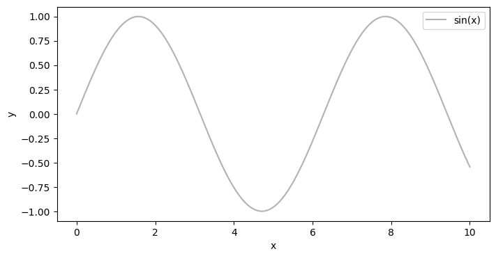
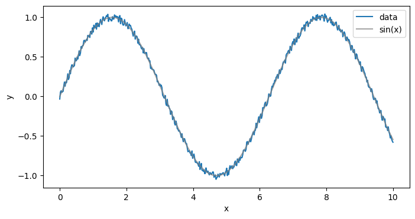

from sklearn.datasets import make_classification
import torch
import numpy as np
import matplotlib.pyplot as plt
X, y = make_classification(n_samples=10**3, n_features=10 ,random_state=42)
X_train = torch.from_numpy(X.astype(np.float32))
y_train = torch.from_numpy(y.astype(np.float32))
y_train = y_train.view(y_train.shape[0], 1)class LogisticRegression(torch.nn.Module):
def __init__(self, inputSize, outputSize):
super(LogisticRegression, self).__init__()
self.linear = torch.nn.Linear(inputSize, outputSize)
def forward(self, x):
x = self.linear(x)
y_pred = torch.sigmoid(x)
return y_pred
inputDim = X_train.shape[1]
outputDim = y_train.shape[1]
learningRate = 0.01
epochs = 100
model = LogisticRegression(inputDim, outputDim)#criterion = torch.nn.CrossEntropyLoss()
optimizer = torch.optim.SGD(model.parameters(), lr=learningRate)
criterion = torch.nn.BCELoss()a = model(X_train[:2])aloss = criterion(a, y_train[0:2])loss
# training loop
num_epochs = 200
for epoch in range(num_epochs):
# forward pass and loss
y_predicted = model(X_train)
loss = criterion(y_predicted, y_train)
# backward pass
loss.backward()
# updates
optimizer.step()
# zero gradients
optimizer.zero_grad()
if (epoch+1) % 25 == 0:
print(f'epoch: {epoch+1}, loss = {loss.item():.4f}')with torch.no_grad():
y_predicted = model(X_train) # no need to call model.forward()
y_predicted_cls = y_predicted.round() # round off to nearest class
acc = y_predicted_cls.eq(y_train).sum() / float(y_train.shape[0]) # accuracy
print(f'accuracy = {acc:.4f}')import torch
x = torch.linspace(0,10,500)
y = torch.sin(x)
import matplotlib.pyplot as plt
plt.figure(figsize=(8,4))
plt.plot(x, y, color="tab:grey", alpha=0.6, label="sin(x)")
plt.xlabel('x')
plt.ylabel('y')
plt.legend()
plt.show()
ytensor([ 0.0000, 0.0200, 0.0401, 0.0601, 0.0801, 0.1000, 0.1200, 0.1398,
0.1596, 0.1794, 0.1991, 0.2187, 0.2382, 0.2576, 0.2769, 0.2961,
0.3152, 0.3341, 0.3529, 0.3716, 0.3902, 0.4085, 0.4267, 0.4448,
0.4626, 0.4803, 0.4978, 0.5151, 0.5321, 0.5490, 0.5656, 0.5820,
0.5982, 0.6142, 0.6299, 0.6453, 0.6605, 0.6754, 0.6900, 0.7044,
0.7185, 0.7323, 0.7458, 0.7590, 0.7719, 0.7844, 0.7967, 0.8087,
0.8203, 0.8316, 0.8426, 0.8532, 0.8635, 0.8734, 0.8830, 0.8922,
0.9011, 0.9096, 0.9177, 0.9255, 0.9329, 0.9399, 0.9466, 0.9529,
0.9587, 0.9643, 0.9694, 0.9741, 0.9784, 0.9824, 0.9859, 0.9891,
0.9918, 0.9942, 0.9961, 0.9977, 0.9989, 0.9996, 1.0000, 0.9999,
0.9995, 0.9986, 0.9974, 0.9957, 0.9937, 0.9912, 0.9884, 0.9851,
0.9815, 0.9774, 0.9730, 0.9682, 0.9630, 0.9574, 0.9514, 0.9451,
0.9383, 0.9312, 0.9237, 0.9159, 0.9076, 0.8990, 0.8901, 0.8808,
0.8711, 0.8611, 0.8507, 0.8400, 0.8290, 0.8176, 0.8059, 0.7939,
0.7815, 0.7689, 0.7559, 0.7426, 0.7291, 0.7152, 0.7010, 0.6866,
0.6719, 0.6569, 0.6417, 0.6262, 0.6104, 0.5945, 0.5782, 0.5618,
0.5451, 0.5282, 0.5110, 0.4937, 0.4762, 0.4585, 0.4406, 0.4225,
0.4042, 0.3858, 0.3673, 0.3485, 0.3297, 0.3107, 0.2916, 0.2724,
0.2530, 0.2336, 0.2141, 0.1945, 0.1748, 0.1550, 0.1352, 0.1153,
0.0954, 0.0754, 0.0554, 0.0354, 0.0153, -0.0047, -0.0247, -0.0448,
-0.0648, -0.0848, -0.1047, -0.1246, -0.1445, -0.1643, -0.1840, -0.2037,
-0.2232, -0.2427, -0.2621, -0.2814, -0.3006, -0.3196, -0.3386, -0.3573,
-0.3760, -0.3945, -0.4128, -0.4310, -0.4490, -0.4668, -0.4844, -0.5019,
-0.5191, -0.5361, -0.5529, -0.5695, -0.5859, -0.6020, -0.6179, -0.6335,
-0.6489, -0.6640, -0.6788, -0.6934, -0.7077, -0.7217, -0.7355, -0.7489,
-0.7620, -0.7748, -0.7874, -0.7995, -0.8114, -0.8230, -0.8342, -0.8451,
-0.8556, -0.8658, -0.8757, -0.8852, -0.8943, -0.9031, -0.9115, -0.9196,
-0.9273, -0.9346, -0.9415, -0.9481, -0.9543, -0.9601, -0.9655, -0.9705,
-0.9751, -0.9794, -0.9832, -0.9867, -0.9898, -0.9924, -0.9947, -0.9965,
-0.9980, -0.9991, -0.9997, -1.0000, -0.9999, -0.9993, -0.9984, -0.9970,
-0.9953, -0.9931, -0.9906, -0.9876, -0.9843, -0.9806, -0.9764, -0.9719,
-0.9670, -0.9617, -0.9560, -0.9500, -0.9435, -0.9367, -0.9295, -0.9219,
-0.9140, -0.9056, -0.8970, -0.8879, -0.8785, -0.8688, -0.8587, -0.8482,
-0.8375, -0.8263, -0.8149, -0.8031, -0.7910, -0.7786, -0.7659, -0.7528,
-0.7395, -0.7258, -0.7119, -0.6977, -0.6832, -0.6684, -0.6534, -0.6381,
-0.6225, -0.6067, -0.5907, -0.5744, -0.5579, -0.5411, -0.5242, -0.5070,
-0.4896, -0.4720, -0.4543, -0.4363, -0.4182, -0.3999, -0.3815, -0.3629,
-0.3441, -0.3253, -0.3062, -0.2871, -0.2679, -0.2485, -0.2290, -0.2095,
-0.1898, -0.1701, -0.1503, -0.1305, -0.1106, -0.0907, -0.0707, -0.0507,
-0.0307, -0.0106, 0.0094, 0.0294, 0.0495, 0.0695, 0.0894, 0.1094,
0.1293, 0.1491, 0.1689, 0.1886, 0.2083, 0.2278, 0.2473, 0.2667,
0.2859, 0.3051, 0.3241, 0.3430, 0.3617, 0.3803, 0.3988, 0.4171,
0.4352, 0.4532, 0.4709, 0.4885, 0.5059, 0.5231, 0.5401, 0.5568,
0.5734, 0.5897, 0.6057, 0.6216, 0.6371, 0.6524, 0.6675, 0.6823,
0.6968, 0.7110, 0.7250, 0.7386, 0.7520, 0.7651, 0.7778, 0.7902,
0.8024, 0.8142, 0.8256, 0.8368, 0.8476, 0.8580, 0.8682, 0.8779,
0.8873, 0.8964, 0.9051, 0.9135, 0.9214, 0.9290, 0.9363, 0.9431,
0.9496, 0.9557, 0.9614, 0.9667, 0.9716, 0.9762, 0.9803, 0.9841,
0.9875, 0.9904, 0.9930, 0.9952, 0.9969, 0.9983, 0.9993, 0.9998,
1.0000, 0.9998, 0.9991, 0.9981, 0.9966, 0.9948, 0.9926, 0.9899,
0.9869, 0.9835, 0.9796, 0.9754, 0.9708, 0.9658, 0.9604, 0.9546,
0.9485, 0.9419, 0.9350, 0.9277, 0.9201, 0.9120, 0.9036, 0.8949,
0.8857, 0.8763, 0.8664, 0.8563, 0.8457, 0.8349, 0.8237, 0.8121,
0.8003, 0.7881, 0.7756, 0.7628, 0.7497, 0.7363, 0.7226, 0.7086,
0.6943, 0.6798, 0.6649, 0.6498, 0.6345, 0.6188, 0.6030, 0.5869,
0.5705, 0.5540, 0.5372, 0.5201, 0.5029, 0.4855, 0.4679, 0.4501,
0.4321, 0.4139, 0.3956, 0.3771, 0.3585, 0.3397, 0.3208, 0.3018,
0.2826, 0.2633, 0.2439, 0.2245, 0.2049, 0.1852, 0.1655, 0.1457,
0.1258, 0.1059, 0.0860, 0.0660, 0.0460, 0.0260, 0.0059, -0.0141,
-0.0341, -0.0542, -0.0742, -0.0941, -0.1141, -0.1339, -0.1538, -0.1735,
-0.1932, -0.2129, -0.2324, -0.2518, -0.2712, -0.2904, -0.3095, -0.3285,
-0.3474, -0.3661, -0.3847, -0.4031, -0.4214, -0.4394, -0.4574, -0.4751,
-0.4926, -0.5100, -0.5271, -0.5440])(y + 0.1*(torch.rand(500) -0.5)).view(-1,1)tensor([[-0.0056],
[-0.0162],
[ 0.0745],
[ 0.0534],
[ 0.0909],
[ 0.0974],
[ 0.0877],
[ 0.1128],
[ 0.1871],
[ 0.1667],
[ 0.2139],
[ 0.1877],
[ 0.2292],
[ 0.2291],
[ 0.3061],
[ 0.2577],
[ 0.3596],
[ 0.3161],
[ 0.3474],
[ 0.3732],
[ 0.4109],
[ 0.3788],
[ 0.3812],
[ 0.4138],
[ 0.5085],
[ 0.4971],
[ 0.5123],
[ 0.4901],
[ 0.5118],
[ 0.5905],
[ 0.5192],
[ 0.6178],
[ 0.5896],
[ 0.5871],
[ 0.6222],
[ 0.6526],
[ 0.6134],
[ 0.6717],
[ 0.7379],
[ 0.6970],
[ 0.6965],
[ 0.7027],
[ 0.7437],
[ 0.8057],
[ 0.7320],
[ 0.8269],
[ 0.8025],
[ 0.8110],
[ 0.8457],
[ 0.8508],
[ 0.8807],
[ 0.8828],
[ 0.8965],
[ 0.8711],
[ 0.9050],
[ 0.8783],
[ 0.9418],
[ 0.8951],
[ 0.9217],
[ 0.9699],
[ 0.9474],
[ 0.9318],
[ 0.9742],
[ 0.9303],
[ 0.9141],
[ 0.9761],
[ 0.9252],
[ 1.0177],
[ 1.0261],
[ 1.0102],
[ 0.9488],
[ 0.9574],
[ 0.9866],
[ 0.9870],
[ 0.9621],
[ 1.0406],
[ 0.9684],
[ 0.9730],
[ 1.0213],
[ 1.0044],
[ 1.0080],
[ 1.0033],
[ 0.9714],
[ 1.0254],
[ 1.0227],
[ 1.0245],
[ 1.0160],
[ 1.0139],
[ 0.9457],
[ 0.9396],
[ 0.9642],
[ 0.9788],
[ 0.9919],
[ 0.9687],
[ 0.9899],
[ 0.9740],
[ 0.8966],
[ 0.8905],
[ 0.8893],
[ 0.8975],
[ 0.8589],
[ 0.8601],
[ 0.9318],
[ 0.8833],
[ 0.8760],
[ 0.8169],
[ 0.8903],
[ 0.8054],
[ 0.8469],
[ 0.7703],
[ 0.8279],
[ 0.7703],
[ 0.7529],
[ 0.7383],
[ 0.8002],
[ 0.6961],
[ 0.7388],
[ 0.6807],
[ 0.6718],
[ 0.6848],
[ 0.7146],
[ 0.6898],
[ 0.6374],
[ 0.5805],
[ 0.5679],
[ 0.5741],
[ 0.5697],
[ 0.5141],
[ 0.5718],
[ 0.4997],
[ 0.5465],
[ 0.5002],
[ 0.5107],
[ 0.4158],
[ 0.4247],
[ 0.4010],
[ 0.4007],
[ 0.4327],
[ 0.3273],
[ 0.3601],
[ 0.3105],
[ 0.2736],
[ 0.2459],
[ 0.2542],
[ 0.2180],
[ 0.2489],
[ 0.2245],
[ 0.1490],
[ 0.1499],
[ 0.1284],
[ 0.1426],
[ 0.1641],
[ 0.0817],
[ 0.0596],
[ 0.0868],
[ 0.0279],
[ 0.0015],
[ 0.0192],
[-0.0083],
[-0.0378],
[-0.0300],
[-0.0797],
[-0.0678],
[-0.1721],
[-0.1551],
[-0.1979],
[-0.2288],
[-0.1981],
[-0.2337],
[-0.2376],
[-0.3118],
[-0.2983],
[-0.3231],
[-0.2837],
[-0.3341],
[-0.3957],
[-0.3272],
[-0.4182],
[-0.4360],
[-0.3990],
[-0.4462],
[-0.4347],
[-0.5307],
[-0.5107],
[-0.5089],
[-0.5593],
[-0.5366],
[-0.5227],
[-0.6336],
[-0.6245],
[-0.5743],
[-0.5952],
[-0.6041],
[-0.6307],
[-0.6749],
[-0.6930],
[-0.7550],
[-0.7349],
[-0.7789],
[-0.7489],
[-0.7431],
[-0.7456],
[-0.7611],
[-0.7697],
[-0.8215],
[-0.7895],
[-0.8768],
[-0.8284],
[-0.8738],
[-0.8229],
[-0.9059],
[-0.8798],
[-0.8812],
[-0.8934],
[-0.8925],
[-0.9009],
[-0.9559],
[-0.9181],
[-0.9300],
[-0.9771],
[-0.9512],
[-0.9252],
[-0.9484],
[-0.9810],
[-0.9393],
[-0.9998],
[-1.0128],
[-0.9640],
[-0.9543],
[-1.0076],
[-1.0007],
[-1.0423],
[-1.0340],
[-0.9720],
[-0.9536],
[-1.0041],
[-1.0223],
[-1.0261],
[-0.9867],
[-1.0379],
[-1.0154],
[-0.9875],
[-0.9674],
[-0.9969],
[-0.9604],
[-1.0057],
[-0.9811],
[-0.9293],
[-0.9764],
[-0.9593],
[-0.9088],
[-0.9775],
[-0.9810],
[-0.9798],
[-0.9103],
[-0.9697],
[-0.8714],
[-0.9366],
[-0.9241],
[-0.9289],
[-0.9276],
[-0.8304],
[-0.8622],
[-0.8205],
[-0.8099],
[-0.8753],
[-0.7867],
[-0.8153],
[-0.8311],
[-0.7557],
[-0.7916],
[-0.7267],
[-0.7853],
[-0.7385],
[-0.7543],
[-0.6566],
[-0.7268],
[-0.6655],
[-0.6616],
[-0.6667],
[-0.5902],
[-0.5801],
[-0.6181],
[-0.5941],
[-0.5217],
[-0.5863],
[-0.5120],
[-0.4866],
[-0.4627],
[-0.4934],
[-0.5030],
[-0.3938],
[-0.4449],
[-0.3759],
[-0.4208],
[-0.3209],
[-0.3426],
[-0.3361],
[-0.3230],
[-0.3159],
[-0.2857],
[-0.2163],
[-0.2331],
[-0.2535],
[-0.2188],
[-0.1775],
[-0.1992],
[-0.1537],
[-0.0802],
[-0.0998],
[-0.0818],
[-0.0270],
[-0.0630],
[-0.0429],
[ 0.0556],
[ 0.0437],
[ 0.0133],
[ 0.1109],
[ 0.1386],
[ 0.1535],
[ 0.1278],
[ 0.1062],
[ 0.2061],
[ 0.2112],
[ 0.2279],
[ 0.2697],
[ 0.2395],
[ 0.2483],
[ 0.3105],
[ 0.2988],
[ 0.3141],
[ 0.3646],
[ 0.3321],
[ 0.3751],
[ 0.3691],
[ 0.4456],
[ 0.3996],
[ 0.4076],
[ 0.5158],
[ 0.4910],
[ 0.5493],
[ 0.5706],
[ 0.5862],
[ 0.5177],
[ 0.5795],
[ 0.6370],
[ 0.6151],
[ 0.6641],
[ 0.6140],
[ 0.6513],
[ 0.7115],
[ 0.6721],
[ 0.6609],
[ 0.6803],
[ 0.7517],
[ 0.7032],
[ 0.7768],
[ 0.7395],
[ 0.7755],
[ 0.8327],
[ 0.7671],
[ 0.8598],
[ 0.8258],
[ 0.7982],
[ 0.8145],
[ 0.9049],
[ 0.8535],
[ 0.8814],
[ 0.9217],
[ 0.9118],
[ 0.9283],
[ 0.8672],
[ 0.9243],
[ 0.8922],
[ 0.9131],
[ 0.8961],
[ 0.9915],
[ 0.9737],
[ 1.0034],
[ 0.9178],
[ 0.9545],
[ 0.9546],
[ 0.9870],
[ 1.0298],
[ 0.9881],
[ 0.9960],
[ 1.0108],
[ 1.0330],
[ 1.0252],
[ 0.9654],
[ 1.0063],
[ 0.9748],
[ 1.0171],
[ 0.9737],
[ 0.9697],
[ 1.0002],
[ 1.0418],
[ 1.0403],
[ 1.0160],
[ 1.0084],
[ 1.0036],
[ 1.0267],
[ 0.9916],
[ 0.9362],
[ 1.0098],
[ 0.9726],
[ 0.9595],
[ 0.9484],
[ 0.9084],
[ 0.9823],
[ 0.8991],
[ 0.9653],
[ 0.9277],
[ 0.9341],
[ 0.9333],
[ 0.8655],
[ 0.9336],
[ 0.8403],
[ 0.8574],
[ 0.8428],
[ 0.8192],
[ 0.8596],
[ 0.8325],
[ 0.8263],
[ 0.8056],
[ 0.8008],
[ 0.7723],
[ 0.7891],
[ 0.7370],
[ 0.7175],
[ 0.7364],
[ 0.7166],
[ 0.6568],
[ 0.7142],
[ 0.7107],
[ 0.6304],
[ 0.6100],
[ 0.5725],
[ 0.5731],
[ 0.6278],
[ 0.5446],
[ 0.5356],
[ 0.5427],
[ 0.5091],
[ 0.5122],
[ 0.4673],
[ 0.5046],
[ 0.4691],
[ 0.4500],
[ 0.4347],
[ 0.3935],
[ 0.3352],
[ 0.3193],
[ 0.3891],
[ 0.2789],
[ 0.3389],
[ 0.3064],
[ 0.3058],
[ 0.2837],
[ 0.2546],
[ 0.1664],
[ 0.1471],
[ 0.1474],
[ 0.1019],
[ 0.1677],
[ 0.1264],
[ 0.0780],
[ 0.1080],
[ 0.0335],
[ 0.0685],
[-0.0379],
[-0.0549],
[-0.0577],
[-0.0959],
[-0.0948],
[-0.1085],
[-0.1634],
[-0.1356],
[-0.1422],
[-0.1446],
[-0.1650],
[-0.1917],
[-0.2519],
[-0.2223],
[-0.3015],
[-0.3362],
[-0.3200],
[-0.3133],
[-0.3563],
[-0.3390],
[-0.3529],
[-0.4460],
[-0.4293],
[-0.4582],
[-0.5074],
[-0.4392],
[-0.5367],
[-0.4962],
[-0.4891],
[-0.5476]])X = x.view(-1,1)
Y = y.view(-1,1) + 0.1*(torch.rand(500).view(-1,1) - 0.5)
import matplotlib.pyplot as plt
plt.figure(figsize=(8,4))
plt.plot(X, Y, label="data")
plt.plot(X, y.view(-1,1), color="grey", alpha=0.7, label="sin(x)")
plt.xlabel('x')
plt.ylabel('y')
plt.legend()
plt.show()